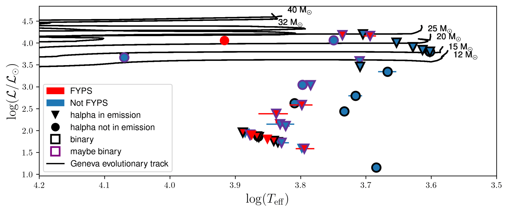

About Me
Education: Computer Science and Physics, Harvey Mudd College
Research Positions: National Radio Astronomy Observatory Intern at Green Bank Observatory (2024), Carnegie Observatories Intern (2023-present), Harvey Mudd College Undergraduate Researcher (2022-present)
Publications: ADS Author Query
About Me: I am an undergarduate at Harvey Mudd College and am currently spending the summer at Green Bank Observatory as a data anlyst intern,
quantifying various radio frequency interference excision methods on Green Bank Telescope data.
My research interests are broad, ranging from exoplanet dynamics to massive stars to radio astronomy. I use machine learning and Bayesian analysis in most of my research and am interested in
its applications outside of astronomy! I also love photography, all photos on here are mine!
Research

Hunting for Post-Red Supergiants
Yellow supergiants (YSGs) are rare and poorly understood, and studying them is critical to constraining massive star evolution. We obtained flux-calibrated Magellan Inamori Kyocera Echelle (MIKE) high-resolution spectra of 40 YSGs in the Large Magellanic Cloud (LMC); this sample likely contains post-red supergiants (RSGs). Fitting these data with ATLAS9 model atmospheres, we determined fundamental parameters for these stars. We measure the first spectroscopic luminosities for YSGs above 20 $M_\odot$, providing us a novel probe of the luminosity-to-mass ratio. Many stars in our sample appear to have anomalously high surface gravities, despite being confirmed LMC supergiants. We manually inspected our data finding evidence for binary companions and ongoing mass loss. Our work demonstrates the valuable role of high-resolution spectroscopy in interpreting the evolutionary status of cool supergiants.
Characterizing Early Compact Planetary Formation with a Correlation Between Instability and Planet Loss
The distribution of orbital period ratios between adjacent exoplanets in observed multiplanet systems is approximately uniform, ignoring pileups near mean motion resonances. This could be expected from a sufficiently chaotic giant impact phase of planet formation. An exception is found at period ratios below 1.5, where there is a steep dropoff toward close separations at a period ratio of unity. We refer to this region as the inner edge of the period ratio distribution.
We investigated whether this falloff at the inner edge of the period ratio distribution can be explained by dynamical instabilities through a suite of numerical experiments. In particular, we initialized a population of multiplanet systems with uniformly drawn period ratios over the full range of this inner edge from [1, 1.5]. We utilized orbital parameters drawn from observed systems in this period range from the NASA Exoplanet Archive. We then found the subset of initial populations that would survive to the present day and compared our synthetic population to the observed one.
Selecting stable synthetic systems through direct N-body integrations is computationally prohibitive. Instead, we selected stable systems using the machine learning models in the Stability of Planetary Orbital Configurations Klassifier (SPOCK) package, which reduces the computation time by a factor of up to $10^5$. We found our synthetic systems to be consistent with having been drawn from the observed population. We will present our statistical comparison to the observations, together with a sensitivity test for each of the main population parameters affecting stability. Our results show that the inner edge of the period ratio distribution provides a novel observational anchor on the giant impact phase of planet formation.
Contact
Email:
Address: